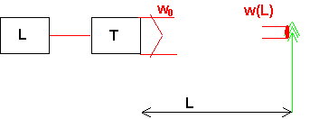
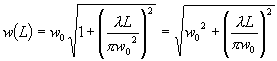
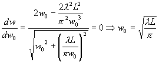
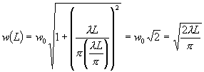

Minsta möjliga spot på stort avstånd
Problemet ser alltså ut så här:

Avståndet till målet, L, är givet och likaså våglängden.
Det vi vet är alltså att

där vi vill att w(L) ska minimeras.
Det är bara att spotta i nävarna och derivera!!!

Vi satte derivatan till noll och löste ut vilket w0 som gav minimalt w(L)
Detta kan sedan sättas in i det översta uttrycket varvid vi får:

Med våra numeriska värden blir det:
� lambda=1064e-9;
� L=2e4;
� w=sqrt(2*lambda*L/pi)
w = 0.1164
11.6cm alltså!!
OBS att detta inte är ett så stort avstånd att vi kan räkna med den enkla divergensformeln. Strålen är så stor (ca 8cm) när den lämnar teleskopet att skärpedjupet blir just 20km!!!
Tänk va??!!